教練研究 › 2026 年 11 月 27 日
教練研究 · 給教練 · 2026 年 11 月 27 日 更新
本期共 48 篇整理、3,080 筆文獻目錄。內容由本機研究筆記自動轉成網頁；論文全文因版權與檔案大小不上傳，請用各篇的 DOI（論文的固定網址）連到原出處。
羽球研究筆記：用數據看懂羽球
💡 一句話
這裡把一百多篇羽球與運動科學研究，整理成動畫、圖表和數字。每個結論都附來源，也會說清楚研究「不能」證明甚麼。

你知道嗎？先挑一題點進去
| 這個問題你答得出嗎？ | 答案在這裡 |
|---|---|
| 多球練 10 秒和練 50 秒，心率差不多，身體用的能量卻不同。為甚麼？ | 🔥 圖解 01 多球 |
| 頂尖單打的回合，長回合佔幾成？發球規則 1.15 m 又改變了甚麼？ | 🏸 圖解 03 戰術 |
| 步法跑得快，為甚麼比賽還是慢半拍？ | ⚡ 圖解 04 敏捷 |
| 100 個本來會受傷的人，做肌力訓練後剩幾個？做伸展呢？ | 💪 圖解 05 肌力 |
| 一週課表怎樣用一條算式算出負荷？ | 📅 圖解 08 課表 |
| 一局發球方拿到幾分，勝負幾乎已定？ | 🎯 圖解 10 四國研究 |
| 教練不講標準動作，選手怎樣自己學會？ | 🧩 圖解 12 CLA |
| 韓國精英選手受傷後，三分之二做錯了哪一步？ | 🩹 圖解 13 傷病 |
羽球的 8 個數字
| 數字 | 意思 | 來源 |
|---|---|---|
| 565 km/h | 殺球初速的金氏世界紀錄（2023，印度 Satwiksairaj Rankireddy，測試環境，非正式比賽） | 金氏世界紀錄 |
| 13.40 × 6.10 m | 雙打場地；單打寬 5.18 m | BWF 規則 |
| 1.55 m | 網柱處網高；中央 1.524 m | BWF 規則 |
| 4.74–5.50 g | 一顆羽毛球的重量，16 根羽毛 | BWF 規則 |
| 1.15 m | 發球擊球瞬間，整顆球須低於此高度 | BWF 規則（2018 起） |
| 60 秒／120 秒 | 一局到 11 分的休息／局與局之間的休息 | BWF 規則 |
| 約 57% | 比賽能量來自有氧系統（模型估算） | 第 01 章 |
| 0.315 | 肌力訓練後的受傷相對風險（約降到三分之一） | 第 05 章 |
章節地圖
flowchart LR
A["🏸 比賽需要甚麼？<br/>03 戰術・10 四國研究"] --> B["💪 身體能力<br/>04 敏捷・05 肌力"]
A --> C["🔥 怎樣練<br/>01 多球・02 其他訓練・12 CLA"]
B --> D["📅 排成課表<br/>08 教練實務"]
C --> D
E["🧠 動作學習與筋膜<br/>06・07"] --> D
F["🎯 心理技能<br/>09"] --> D
D --> G["🩹 恢復、傷害、復出<br/>13"]| 想做甚麼 | 從這裡開始 |
|---|---|
| 5 分鐘了解羽球科學 | 先看上面的圖解頁，每頁一張動畫 |
| 排下週課表 | 08 教練實務整合 |
| 讀完整研究和判讀界線 | 研究總覽 |
ℹ️ 怎樣讀這些數字
每張圖下方都寫明資料來源和章節。示意動畫只說明概念，不是比賽實測；標明「示範」的數值是按課表假設算出，不是研究結果。
研究章節（完整版）
每章整理一個主題的研究、證據強弱與教練應用。
- 羽球研究筆記總覽
近五年羽球與運動科學研究的整理：多球、體能、戰術、敏捷、肌力、運動行為、筋膜與動作控制，以及教練實務整合。 - 01｜多球訓練法
多球餵球的間歇長短、代謝負荷與技術學習證據，以及如何轉成課表。 - 02｜其他訓練法
綜合體能、兒童羽球課程、整合式神經肌肉訓練、視覺訓練與特奧課程的證據整理。 - 03｜戰術分析（技術與戰術）
擾動分析、五項目時間結構、男雙發接發、雙打控制區與混雙前三拍的比賽分析研究。 - 04｜敏捷體能分析
平衡、增強式、影子步法、光動反應等介入，以及羽球專項變向測驗的信效度。 - 05｜肌力分析
阻力、增強式、核心與複合式訓練對羽球選手體能與跨步力學的證據。 - 06｜運動行為、運動訓練與筋膜相關介入
運動參與、動作學習、長期訓練，以及泡棉滾筒、伸展、手法、貼紮等筋膜相關介入的證據比較。 - 07｜動作發展、動作控制與筋膜：近五年研究
兒童動作發展、筋膜感覺功能、本體感覺訓練、動作學習保留與轉移，以及肌力負荷適應的 16 篇研究。 - 08｜教練實務整合：從研究到課表
把第 01–07 章的研究與運動科學基礎知識整合成可執行的課表、監控、動作學習、恢復與傷害預防原則。 - 09｜心理技能與分間例行程序
心理技能訓練（PST）、分間與賽前例行程序、意象、自我對話、目標設定、放鬆；面授約三個月的 PST；中學前八名選手的教練流程。 - 10｜四國研究與制度（日本、法國、台灣、韓國）
日本青少年代表分級與影片支援、法國 INSEP／FFBaD、台灣相子元鞋底生物力學與劉有德動態系統學習觀、韓國比賽分析與國家隊研究。 - 11｜補充：跨章新增研究
預判介入研究、頂尖比賽回合結構與青少年 HIIT、多球負荷的矛盾證據、sRPE 效度與減量；各篇標明延伸哪一章。 - 12 限制導向動作學習（CLA）— 羽球教學版
- 13｜補充：影片回饋、教練溝通與精英嚴重傷病
2026-11 新發表三篇：影片／科技回饋系統性回顧、教練對選手溝通範圍回顧、韓國精英單打 vs 雙打嚴重肌腱軟骨傷；各篇標明延伸哪一章。 - 14｜補充：變向訓練、殺球動作控制、聽覺與預判、青年比賽負荷
2026-11 新發表四篇：羽球變向訓練貝氏網絡統合分析、動作控制訓練對殺球的隨機試驗、聽覺剝奪對擋殺與預判的場地實驗、青年比賽 RPE 與外部負荷；各篇標明延伸哪一章。 - 15｜補充：羽球方步訓練、敏捷變向統合、技術測驗與比賽失誤、週跳狀態監控
2026-11 新發表四篇：日本方步訓練改成羽球專項的準實驗、計時敏捷與變向的頻率派網絡統合分析（對照第 14 章貝氏分析）、15–17 歲國家隊技術測驗與比賽非受迫失誤、大學選手每週 CMJ 狀態估計；各篇標明延伸哪一章。
圖解版（先看這裡）
用動畫、圖表和數字講一個問題，5 分鐘看完。
- 圖解 01｜多球：心率一樣，練到的卻不一樣
用動畫看懂多球間歇長短如何改變能量系統、乳酸與移動距離。 - 圖解 03｜一分怎麼打：發球、回合與主動權
動畫看發球 1.15 m 規則與球路；數據看長回合比例、網前球與混雙前三拍。 - 圖解 04｜敏捷：跑得快，為甚麼還是慢半拍？
敏捷的兩個成分（知覺決策＋變向速度）、測驗誤差 CV 與真進步門檻。 - 圖解 05｜肌力：最被低估的防傷工具
弓步受力動畫、肌力／平衡／伸展的防傷效果比較，以及台灣國中選手複合式訓練數據。 - 圖解 08｜一條算式管好一週訓練負荷
session-RPE 負荷計算、單調度與壓力值、恢復優先順序與賽前減量。 - 圖解 10｜一局發球方拿幾分，勝負幾乎已定？
韓國決策樹研究的發球得分門檻，以及日本、法國、台灣研究的重點數字。 - 圖解 12｜不講標準動作，選手怎樣自己學會？
限制導向動作學習（CLA）的三類限制動畫、教學循環與兩個羽球練習範例圖。 - 圖解 13｜三分之二選手沒等醫生批准就回場
韓國 126 名精英選手的嚴重傷病數據、五大診斷與復出管理缺口。
研究文件
學術資料夾中的文獻整理、男子雙打認知教學、研究紀錄與候選文獻清單。
- 男子雙打認知教學運用
- 羽毛球近五年文獻整理
- 研究紀錄
- 近五年羽毛球文獻收集
- 多球訓練研究統整：多球練習與模擬比賽的負荷比較
- 課堂延伸研究原文索引
第七章 16 篇研究的原文取得狀態與本機檔案。 - 其他／待人工篩選｜候選文獻索引
- 其他訓練法｜候選文獻索引
- 多球訓練法｜候選文獻索引
- 戰術分析｜候選文獻索引
- 敏捷體能分析｜候選文獻索引
- 肌力分析｜候選文獻索引
比賽數據（Excel）
奧運羽球比賽（鄭任佑整理）的逐拍紀錄、統計表與信度表；可下載原始 Excel。
- 比賽數據：奧運八強中國VS中國
4 個工作表；逐拍紀錄與統計 - 比賽數據：奧運八強中華台北VS丹麥
3 個工作表；逐拍紀錄與統計 - 比賽數據：奧運八強韓國VS印尼
3 個工作表；逐拍紀錄與統計 - 比賽數據：奧運八強馬來西亞VS泰國
4 個工作表；逐拍紀錄與統計 - 比賽數據：奧運四強中國VS馬來西亞-廖信度表
5 個工作表；逐拍紀錄與統計 - 比賽數據：奧運四強中國VS馬來西亞
4 個工作表；逐拍紀錄與統計 - 比賽數據：奧運四強韓國VS丹麥
3 個工作表；逐拍紀錄與統計 - 比賽數據：奧運金牌戰
4 個工作表；逐拍紀錄與統計 - 比賽數據：奧運銅牌戰
2 個工作表；逐拍紀錄與統計
附錄與紀錄
課堂筆記、書單與文獻整理過程。
- 2026-10-02 課堂筆記：筋膜訓練與運動行為
課堂筋膜討論的重點、需要更正的引用，以及可延伸的研究問題。 - 文獻整理與清理紀錄
文獻收集、去重、章節新增與審閱更正的紀錄。 - 附錄｜台灣繁體中文：運動訓練與筋膜書單
台灣可取得的繁體中文訓練、筋膜解剖與動作實作書單，以及如何與研究論文對照閱讀。